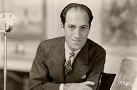
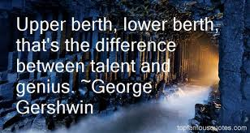
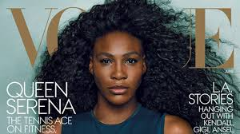
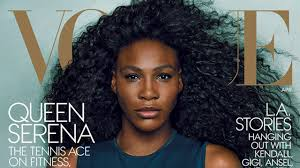
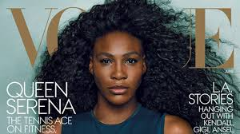

Home
About Us
Famous People
Historical Facts
Famous People
T.S. Elliot - Writer
George Gershwin - Composer and Pianist
 
Linda Hamilton - Actor
Serena Williams - Athlete

Jack LaLanne - Godfather of Modern Fitness
Olivia Newton-John - Singer, Songwriter, and Actor
Jose Miguel Class "El Gallito de Manati" - Singer, Songwriter, and Actor


 



:format(jpeg):mode_rgb():quality(40)/discogs-images/R-8855847-1470188294-7315.jpeg.jpg)